Fewer is More: Boosting LLM Reasoning with Reinforced Context Pruning
Abstract
Large Language Models (LLMs) have shown impressive capabilities, yet they still struggle with math reasoning. In this work, we propose CoT-Influx, a novel approach that pushes the boundary of few-shot Chain-of-Thoughts (CoT) learning to improve LLM mathematical reasoning. Motivated by the observation that adding more concise CoT examples in the prompt can improve LLM reasoning performance, CoT-Influx employs a coarse-to-fine pruner to maximize the input of effective and concise CoT examples. The pruner first selects as many crucial CoT examples as possible and then prunes unimportant tokens to fit the context window. A math reasoning dataset with diverse difficulty levels and reasoning steps is used to train the pruner, along with a math-specialized reinforcement learning approach. As a result, by enabling more CoT examples with double the context window size in tokens, CoT-Influx significantly outperforms various prompting baselines across various LLMs (LLaMA2-7B, 13B, 70B) and 5 math datasets, achieving up to 4.55% absolute improvements. Remarkably, without any fine-tuning, LLaMA2-70B with CoT-Influx surpasses GPT-3.5 and a wide range of larger LLMs (PaLM, Minerva 540B, etc.) on the GSM8K. CoT-Influx serves as a plug-and-play module for LLMs and is compatible with most existing reasoning prompting techniques, such as self-consistency and self-verification.
1 Introduction
Large Language Models (LLMs) have demonstrated remarkable capabilities across a range of tasks Brown et al. (2020); OpenAI (2023a). However, it remains a significant challenge to improve LLM performance on reasoning tasks, especially for smaller LLMs like LLaMA Touvron et al. (2023a) on math reasoning.
While existing efforts focus on optimizing Chain-of-Thought (CoT) prompts Wei et al. (2022); Wang et al. (2023d); Yao et al. (2023) and fine-tuning LLMs Luo et al. (2023) under the zero-shot setting, the potential of few-shot learning in improving LLM reasoning has not been fully explored. Inspired by the human reasoning process, we propose the hypothesis: if LLMs are exposed to more step-by-step problem-solving examples (i.e., CoTs) before answering questions, it could potentially improve LLMs reasoning capability to generate a correct solution. This leads to our question: what’s the boundary of LLM reasoning capability achievable through inputting more CoT examples?
However, we face two major obstacles. First, the limited token length of LLMs’ context window restricts the number of few-shot examples. Extending the context window is one solution, but it requires expensive fine-tuning and increases inference overhead Chen et al. (2023a); Peng et al. (2023a). While prompt compression Li et al. (2023b); Jiang et al. (2023) is another approach, it underperforms in math reasoning. Tokens like numerical and format ones, though identified redundant, are crucial for few-shot math problem solving.
Second, it’s challenging to select helpful CoT examples. Section 3 reveals that random choices can even harm reasoning performance. Existing retrieval-based methods Liu et al. (2021); Scarlatos and Lan (2023) are not tailored for math reasoning, making them suboptimal. These retrieved examples are model-agnostic, while we found that different LLMs favor CoT examples of varying characteristics (e.g., diverse difficulty levels).
In this work, we propose CoT-Influx, which addresses all the above challenges and pushes the boundaries of utilizing few-shot learning to improve LLM math reasoning capability. CoT-Influx is motivated by the observation that current LLM context window has not been fully utilized due to redundancy at both the example and token levels in natural language input. As such, these redundant inputs can be pruned to free up space for more informative context. The central idea of CoT-Influx is to input long lengthy CoT examples, select the crucial examples for the target LLM, and then prune redundant tokens to fit within the original LLM context window. As a result, by inputting much more helpful CoT examples, each composed solely of informative tokens and with a shorter length, we greatly improve LLM ability to solve math problems. Moreover, as all these inputs remain within the context window, we do not increase any inference overhead. This stands in stark contrast to other methods Hao et al. (2022); Chen et al. (2023a).
CoT-Influx treats the target LLM as a black box, and serves as a plug-and-play module for LLMs as shown in Fig. 3. The key module is a coarse-to-fine pruner involving two steps: (i) a shot pruner first selects the most helpful CoT examples from a large batch of shots, and (ii) a token pruner then removes unimportant tokens from these selected CoT examples. To effectively train the pruner module tailored for math reasoning, CoT-Influx is built upon the following novel techniques.
First, CoT-Influx requires a CoT dataset for training and inference. Existing CoT examples, heavily reliant on costly human engineering, often struggle with diversity and quality. To address this, we employ GPT-4 OpenAI (2023a) and Evol-Instruct Xu et al. (2023) to create a math reasoning dataset, called MRD3. With problems of varying difficulty and reasoning steps, MRD3 enables CoT-Influx to generalize across a wide range of math problems.
Second, training the pruner presents two challenges: (1) since we identify discrete tokens before the LLM tokenizer, the loss gradient cannot be backpropagated through the tokenizer to update the pruner; (2) The high difficulty of many math problems, which consistently yield incorrect answers regardless of the quality of compressed few-shot examples, poses a challenge to the effective training of the pruner. To this end, we introduce a novel training approach with reinforcement learning to mitigate the gradient issue. We design a reward function to measure the LLM loss, few-shot math reasoning effectiveness, and token length constraints. Then, we design a difficulty-aware dataloader filtering appropriate problems and introduce two techniques to stabilize the RL training.
Extensive experiments on various LLMs and five math datasets demonstrate the effectiveness of CoT-Influx. CoT-Influx significantly boosts LLM reasoning capability, achieving 1.36%-14.09% absolute improvements over SOTA baselines, and establishes a new prompting-based benchmark in math reasoning accuracy without any fine-tuning or additional inference costs. Remarkably, LLaMA2-70B with CoT-Influx outperforms a broad range of larger LLMs and surpasses GPT-3.5 by 2.5% on GSM8K. Moreover, CoT-Influx excels over retrieval and prompt compression baselines in example selection and identifying crucial tokens.
2 Related Works
LLMs for Math Reasoning. Drawing from the Chain-of-Thought (CoT) Wei et al. (2022), recent research has greatly improved the reasoning capabilities of LLMs by providing step-by-step reasoning paths. The main efforts are twofold: enhancing CoT prompts, such as Program-of-Thoughts Chen et al. (2023b), Tree-of-Thoughts Yao et al. (2023), and Everything-of-Thoughts Ding et al. (2023), and innovating CoT-based training data for fine-tuning LLMs like WizardMath Luo et al. (2023).
However, most works focus on the zero-shot setting with only task instruction or CoT prompts, leaving the potential of few-shot CoT largely untapped. We explore leveraging few-shot CoT learning to improve LLMs’ math reasoning capabilities.
Prompt Compression. To address the challenge of limited few-shot examples due to restricted context window length, one related work involves prompt compression. Key approaches include: (1) token pruning Kim et al. (2022); Li et al. (2023a); (2) soft prompt compression methods Wingate et al. (2022); Mu et al. (2023); Chevalier et al. (2023); Ge et al. (2023); and (3) information-entropy-based approaches Li et al. (2023b); Jiang et al. (2023).
However, they do not effectively solve our problem for two reasons. First, they prune tokens based on designed metrics, often failing to remove redundancy of the entire CoT examples. Second, some tokens such as numerical and format tokens, although redundant, are crucial for math reasoning.
Prompt Retrieval optimizes task performance by selecting high-quality few-shot examples using either heuristics or a supervised retriever model. Heuristic methods, such as the widely used TopK retrieval Liu et al. (2021); Gao et al. (2021), BM25 Robertson et al. (2009), VoteK Hongjin et al. (2022), and entropy Lu et al. (2022), select examples based on semantic similarity. Recently, supervised-based methods like EPR Rubin et al. (2021), LLM-R Wang et al. (2023b), and IDS Qin et al. (2023) have been proposed, which train a retrieval model to learn better example selection.
However, these methods are sub-optimal for math reasoning, as they retrieve model-agnostic examples. In contrast, LLMs with different capabilities favor CoT examples of varying complexities. Moreover, they don’t account for token redundancy, which restricts the number of retrieved examples.
3 Pilot Study
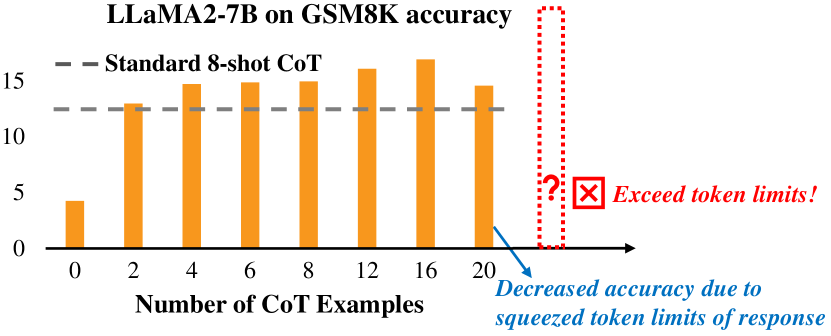
This section presents our key observations of few-shot learning in improving LLMs math reasoning, upon which the CoT-Influx design is based. Note that experiments are done with our proposed CoT dataset, MRD3, as introduced in Sec. 4.1.
Observation 1: LLMs can improve reasoning with more helpful CoT examples, but the current context window restricts the number of CoT examples.
A standard practice for evaluating LLMs’ math reasoning capability is the use of 8-shot manually-designed CoTs Wei et al. (2022). We increase the number of CoT shots to see if reasoning accuracy improves. To avoid poor-quality examples, we use the TopK method Liu et al. (2021) to select the most relevant CoT examples for each question. Given LLaMA2’s context window limit of 4096 tokens, we could only input up to 20 CoT examples‡‡\ddagger‡‡\ddaggerThe input token length is less than the context window token limit, as the answer generation also shares this limit. . As Fig. 1 shows, increasing CoT examples improves LLaMA2-7B’s reasoning accuracy on the GSM8K dataset, significantly outperforming the standard 8-shot setting. However, the limited LLM context window hinders the full potential of few-shot CoT learning for improving math reasoning. For instance, even with 20 CoTs not hitting the token limit, accuracy drops as the large input context limits the LLM’s response space.
Observation 2: CoT example selection is crucial for math reasoning. Simply adding CoT examples randomly doesn’t boost performance.
The prior study suggests that more CoT examples can improve LLM reasoning performance. However, the quality of CoT examples is crucial to the final performance. As shown in Table 1, even with up to 16 CoT shots, random selection underperforms the standard 8-shot setting, which is manually curated for quality.
| Model | Manual 8 Shots | Method (16 Shots) | |
| Random 1 | Random 2 | ||
| LLaMA2-7B | 13.79 | 12.36 | 13.27 |
| LLaMA2-13B | 27.82 | 23.04 | 23.28 |
Observation 3: A CoT example contains redundant tokens for math reasoning, which can be pruned to free up space for more informative content.
Observation 2 indicates that few-shot CoT examples contain useless or even harmful examples that can be pruned. We further observe that a CoT example often has redundant tokens. For instance, the blue tokens in Fig. 2 can be removed without affecting LLM performance. However, identifying redundant tokens for math reasoning poses a challenge. Simply using existing prompt compression methods Jiang et al. (2023); Li et al. (2023b) leads to a significant performance decline. Fig. 2 shows a compressed example using LLMLingua Jiang et al. (2023). Some numerical and format tokens (colored in red), while identified as redundant, are crucial for LLM to comprehend the context for solving a math problem.
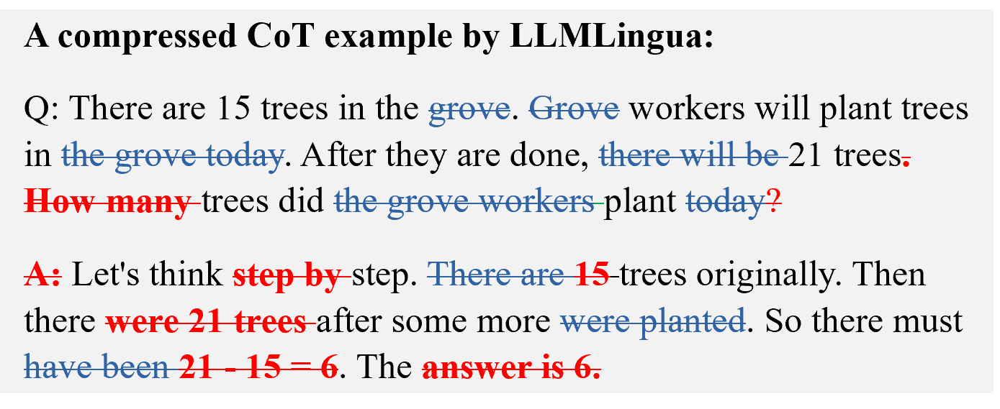
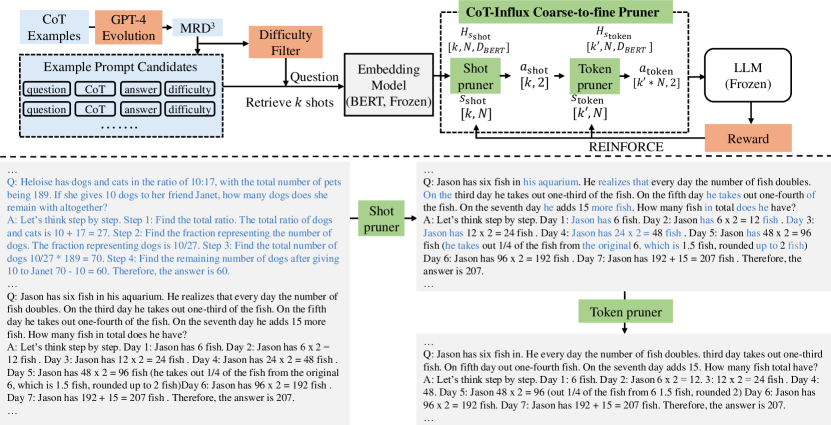
4 CoT-Influx Methodology
Motivated by our observations, this section introduces CoT-Influx, which maximizes CoT examples within the LLM context window by identifying the most important CoT examples and tokens from long lengthy input contexts.
4.1 CoT Dataset Collection
We start by collecting a high-quality math reasoning dataset, comprising diverse CoT examples with varying steps and difficulties. We merge the training set of GSM8K Cobbe et al. (2021), MAWPS, MAWPS-single Koncel-Kedziorski et al. (2016), and 1000 random examples from AQuA Ling et al. (2017) to create an initial dataset of 9.7K question-answer pairs. Then, we prompt GPT-4 to generate formatted CoT reasoning steps. Notably, it’s crucial to maintain a consistent format for each example in few-shot learning. Our dataset also assigns a difficulty score from 1 to 10 for each question, based on GPT-4’s evaluation, where 1 signifies the easiest questions and 10 is the most difficult.
We observe that most questions in this initial dataset score between 2-4. To improve difficulty diversity, we use GPT-4 to mutate questions, generating corresponding CoTs with varied difficulty levels. We apply 5 mutation schemes, three to increase reasoning difficulty and two to simple questions. The final dataset is referred to as Math Reasoning Dataset with Diverse Difficulty (MRD3).
4.2 Problem Formulation
Let denote the CoT dataset (i.e., the MRD3), and be a subset of CoT examples, each composed of a question, reasoning steps, and an answer. The total number of tokens in these CoT examples far exceeds the LLM context window length limit of . CoT-Influx is designed to perform a two-step pruning process:
|
|
(1) |
Initially, non-useful CoT examples are pruned from , resulting in a reduced set of examples. Then, for each retained CoT example , redundant tokens are pruned, yielding a shorter example, .
Let denote the question that LLM is tasked to solve. For final input , we concatenate all tokens from and place them before . Our goal is to optimize the input , so that LLM can correctly answer the question under . Meanwhile, the token count of , , must be less than the LLM context window limit . Formally, we optimize the following:
|
|
(2) |
where is LLM loss, and evaluates if LLM’s answer matches the correct answer , this will be elaborated in Sec. 4.4.
Overview. Fig. 3 illustrates our approach. The core component is a lightweight, plug-and-play module (Sec. 4.3), which consists of a small text embedding extractor and a coarse-to-fine pruner.
To train the pruner, we face the challenge of gradient backpropagation when pruning discrete tokens outside the LLM. The LLM loss gradient cannot be backpropagated through the tokenizer. To address this, we design a multi-objective reward function and use reinforcement learning for effective training (Sec. 4.4). The overall training process is outlined in Algorithm 1.
4.3 Coarse-to-fine Pruner Design
Text embedding extractor. As CoT-Influx serves as an external module, we need to extract text embedding as prediction features. However, it’s non-trivial to extract features for long inputs beyond the LLM context window. To address this, we use a small encoder model, BERT-Large Devlin et al. (2018), to extract sentence-level (i.e., a CoT example) embedding instead of extracting token embedding from the entire long context. For a batch of CoT examples, each example is padded to =512 tokens. BERT then inferences these examples to obtain the final layer of text embedding, denoted as , where is BERT’s hidden dimension size.
State. As shown in Fig. 3, we define state for the first shot pruner, representing the input batch of CoT examples . For the second token pruner, we define state , which represents all remaining tokens after the shot pruner. is the number of retained examples.
Action. Let and denote the actions predicted by the shot and token pruner, respectively. The action space is defined as {0, 1}, where 1 signifies retention and 0 indicates pruning. determines whether each CoT example should be pruned, while predicts the pruning of each token in the retained CoT examples.
Two-stage policy network. The pruner module is a two-stage policy network, each stage is a two-layer feed-forward network (MLP) with GELU activation. This module outputs a continuous categorical distribution , used for sampling discrete actions (i.e., {0, 1}). Let denote the MLP’s trainable parameters and the sigmoid function. Based on the current states and the hidden states , the policy network sequentially make two action predictions as follows:
| (3) |
| (4) |
where and are the predicted actions, sequentially predicting whether to prune each of the CoT examples and each token within the retained examples, respectively. We predict the discrete action by sampling from the categorical distribution with a softmax function.
Input: target LLM, dataset , number of CoTs , token limit , manual few-shot cot , repeat
4.4 End-to-end RL Optimization
Multi-objective Reward. Our objective in Eq. 2 is to train the pruner module to identify the most crucial CoT examples and useful tokens for math problem solving, while keeping the final tokens within the original LLM context window. To achieve this, we design a multi-objective reward.
Let be the final input to LLM, which includes the retained CoT tokens from the policy network and the target question. represents the token count of , and is the token count limit. The reward is defined as follows:
| (5) |
where the first term evaluates the effectiveness of inputted CoT tokens, and the second term ensures they are within the LLM context window. is LLM’s prediction loss under , evaluates the reasoning accuracy (to be discussed later). is a hyperparameter that penalizes the token count for being too short (i.e., ) or exceeding (i.e., ) the token limit .
In addition to , we introduce to evaluate math reasoning accuracy. This is because , the average loss of generated tokens, doesn’t fully reflect LLM’s ability to generate correct answers. Specifically, is set to 1 for a correct answer and 0 for an incorrect one. Notably, we found that if the format or crucial tokens are pruned, LLM struggles to interpret the input context correctly, leading to irrelevant answers for math problem solving. In such cases, we penalize with a value of -0.1.
Optimization with REINFORCE. We employ reinforcement learning to maximize the reward and train the two-stage policy network. According to REINFORCE Williams (1992), the network parameters are updated by the gradients:
|
|
(6) |
Notably, as shown in Fig. 3, only the parameters of the policy network require training. The embedding extractor and LLM are frozen, thus, the overall training overhead is lightweight.
Difficulty-aware data filter. Existing LLMs, particularly smaller ones, underperform in math reasoning. If the question is too challenging for LLMs, the answer will always be incorrect, regardless of the quality of compressed few-shot CoT examples, making it challenging to effectively train our pruner module. To address it, we use a difficulty filter to sample a math question set from , which includes only easy questions with a difficulty score below a threshold . During training, each question in samples a batch of CoT examples from , where is the CoT candidate set sampled from .
Stabilize the training. Another challenge is that pruning CoT and tokens during training introduces instability, making it difficult for effective training.
First, despite the optimization of question set through the filter, LLM performance for a randomly sampled question under different few-shot prompts can still be unpredictable. This unpredictability, where a question might yield correct results under low-quality pruned prompts and a complex question might fail under carefully pruned prompts, can affect the pruner’s training effectiveness. To address this, we continuously repeat a sampled question multiple times, , each time with a different pruned few-shot prompt from the pruner. Moreover, we use exponential moving average (EMA) to smooth reward in Eq. 5.
Second, during the early training, our pruner module makes random decisions, leading to arbitrary removal of CoT examples and tokens. These randomly pruned few-shot prompts can cause instability in RL training. Empirically, we append the manually-designed 8-shot CoTs Wei et al. (2022) to the pruned prompts. This ensures a good lower bound and stabilizes the training.
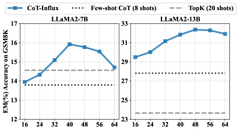
| Method | #Input CoT shots | #Average tokens | LLaMA2-7B | LLaMA2-13B | LLaMA2-70B |
| Zero-shot | 0 | - | 4.25 | 5.84 | 11.45 |
| Zero-shot-CoT Kojima et al. (2022) | 0 | - | 1.74 | 12.28 | 21.91 |
| Few-shot-CoT Wei et al. (2022) | 8 | 655 | 13.79 | 27.82 | 55.42 |
| Random retrieval | 20 | 3379.8 | 12.51 | 22.21 | 53.07 |
| TopK retrieval Liu et al. (2021) | 20 | 3535.4 | 14.56 | 23.65 | 54.59 |
| BM25 retrieval Zhenyu et al. (2023) | 20 | 3816.1 | 13.42 | 25.17 | 54.21 |
| TopK+GPT4 Compression | 40 | 1376.0 | 7.08 | 11.01 | 25.17 |
| TopK+Selective Context Li et al. (2023b) | 40 | 2262.4 | 0.45 | 0.76 | 2.50 |
| TopK+LLMLingua Jiang et al. (2023) | 40 | 2048.0 | 5.38 | 8.34 | 22.74 |
| CoT-Influx | 48 | 2037.0 | 15.92 | 32.37 | 59.59 |
5 Evaluation
| Model | Method | AddSub | Multiarith | Svamp | Singleeq | Avg. |
| Zero-shot | 58.73 | 5.50 | 32.2 | 62.79 | 39.81 | |
| Few-shot-CoT | 56.96 | 43.67 | 38.1 | 66.54 | 51.32 | |
| LLaMA2-7B | TopK retrieval | 46.08 | 34.50 | 38.1 | 46.46 | 41.29 |
| TopK+LLMLingua | 12.91 | 10.50 | 19.5 | 19.49 | 15.60 | |
| CoT-Influx | 62.28 | 47.00 | 40.2 | 72.05 | 55.38 | |
| Zero-shot | 70.13 | 6.50 | 43.8 | 71.07 | 47.88 | |
| Few-shot-CoT | 65.82 | 72.83 | 42.7 | 77.36 | 64.68 | |
| LLaMA2-13B | TopK retrieval | 60.76 | 57.00 | 50.2 | 68.50 | 59.12 |
| TopK+LLMLingua | 22.28 | 22.33 | 27.5 | 25.20 | 24.33 | |
| CoT-Influx | 69.62 | 73.87 | 50.5 | 83.07 | 69.26 |
Models, datasets and metric. We evaluate CoT-Influx on LLaMA2-7B, LLaMA2-13B, and LLaMA2-70B. The mathematical datasets for evaluation include GSM8K Cobbe et al. (2021), AddSub Hosseini et al. (2014), Multiarith Roy and Roth (2015), Svamp Patel et al. (2021), and Singleeq Koncel-Kedziorski et al. (2015). For evaluation metric, we report Exact Match (EM) accuracy of the predicted answers.
Baselines We set three baselines for comparison:
- •
-
•
Prompt retrieval: we also compare with retrieval baselines, specifically using random, TopK Liu et al. (2021), and BM25 Robertson et al. (2009) methods. We select as many CoT examples as possible using each method, without exceeding LLM context window. Random retrieval is to reflect the average quality of our CoT dataset.
-
•
Prompt compression: To evaluate the effectiveness of identifying crucial tokens, we compare the resulting compressed prompts from the same batch of CoT shots with state-of-the-art prompt compression baselines: Selective Context Li et al. (2023b), LLMLingua Jiang et al. (2023), and compression through GPT-4.
5.1 Main Results
Effectiveness of enabling more few-shot CoTs. We first evaluate how far the boundary of few-shot learning can be pushed using CoT-Influx. For comparison, we set up two baselines: (i) Few-shot CoT, using 8 manual-designed CoT shots as the default LLM evaluation setting on GSM8K. (ii) TopK retrieves 20 CoT shots from our dataset, denoting the max shot number within LLaMA2 context window.
For CoT-Influx, we test LLaMA2 7B and 13B on GSM8K, adjusting the number of CoT shots from 16 to 64 examples, which corresponds to 0.7 to 2.8 the token count of LLaMA2 context window. As shown in Fig. 4, we make two observations: (1) More CoT shots, facilitated by CoT-Influx, indeed boosts LLM math reasoning performance, particularly for larger LLMs. On LLaMA2-13B, by inputting 48 CoTs, we significantly outperform the standard few-shot CoT and TopK by 4.55% and 8.72%, respectively. (2) There is an optimal number of CoT shots for CoT-Influx. Its peak performance on LLaMA2 7B and 13B are at 40 and 48 shots, respectively. We attribute this to two potential reasons. First, an extremely large number of shots complicates CoT-Influx’s optimization. Second, there may be an upper limit to improving LLM reasoning capability through few-shot learning.
Comparison with state-of-the-art baselines. Table 2 and Table 3 present the comparison results of CoT-Influx with state-of-the-art baselines across LLaMA2 family and 5 mathematical datasets, highlighting the following observations: (1) by utilizing more few-shot CoTs that are twice the LLM context window, CoT-Influx significantly outperforms all baselines, with 2.13% to 4.55% absolute improvements. (2) Despite using fewer input tokens, CoT-Influx consistently outperforms retrieval baselines by 1.36% to 14.09% absolute improvements. This is because our compressed tokens indicate more informational CoT examples without redundancy. In contrast, they select entire examples, which may contain redundant tokens, based on semantic similarity between the target question and CoT examples, without considering the different CoT preference of the target LLM. (3) CoT-Influx significantly outperforms prompt compression baselines in preserving the most crucial tokens for math reasoning, while methods like Selective Context and LLMLingua suffer accuracy declines due to difficulties in maintaining few-shot prompt structure. GPT-4 tends to prune essential reasoning steps, which negatively impacts CoT effectiveness.
We further demonstrate the effectiveness of CoT-Influx by comparing LLaMA2-70B with larger size LLMs on GSM8K. As shown in Table 4, CoT-Influx significantly boosts LLM reasoning capabilities. Remarkably, without any fine-tuning, LLaMA2-70B with CoT-Influx outperform much larger LLMs. LLaMA2-70B surpasses GPT-3.5 with an absolute improvement of 2.5%.
| Model | Parameters | EM (%) |
| Finetuned GPT-3 Wei et al. (2022) | 175B | 34.0 |
| Chinchilla Hoffmann et al. (2022) | 70B | 43.7 |
| Text-davinci-002 Kojima et al. (2022) | 175B | 51.5 |
| PaLM Chowdhery et al. (2022) | 540B | 56.5 |
| GPT-3.5 OpenAI (2023a) | - | 57.1 |
| Minerva Lewkowycz et al. (2022) | 540B | 58.8 |
| LLaMA2-70B+CoT-Influx | 70B | 59.6 |
Compatible with existing reasoning prompts. As a method to improve LLM reasoning capability, CoT-Influx is complementary with other advanced reasoning-based prompts. To prove this, we apply self-consistency Wang et al. (2023d) and self-verification Weng et al. (2023) to compressed prompts generated by CoT-influx. For evaluation efficiency, we sampled 20 times. As Table 5 shows, applying self-consistency and self-verification further improve LLaMA2’s performance on GSM8k.
| Method | LLaMA2-13B | LLaMA2-70B |
| CoT-Influx | 32.37 | 59.59 |
| CoT-Influx+maj@20 | 33.43 | 60.73 |
| CoT-Influx+verify@20 | 34.04 | 61.79 |
5.2 Ablation Study and Analysis
The effectiveness of MRD3 dataset. Beyond our pruner, we introduce MRD3 dataset, which is evolved by GPT-4 for diverse reasoning steps and difficulties. We compare with two baselines: (1) MRD3 without evolution, excluding GPT-4 evolved examples, and (2) the human-labeled GSM8K training set, which excludes GPT-4’s reformatted generation. We apply our pruner on these datasets under the same setting. As shown in Table 6, both GPT-4 generated and evolved CoT examples are vital for improving the reasoning performance.
| CoT dataset | LLaMA2-7B | LLaMA2-13B | LLaMA2-70B |
| MRD3 | 15.92 | 32.37 | 59.59 |
| MRD3 w/o evolution | 14.94 | 30.55 | 57.70 |
| GSM8K training set | 14.18 | 29.64 | 56.71 |
Ablation study on coarse-to-fine pruner. Our pruner operates at both shot and token levels to fully exploit redundancy within CoT examples. To verify the effectiveness, we conduct experiments with only shot or token pruner under the same setting. As shown in Table 7, removing any pruning stage decreases performance. Notably, removing token-only pruning causes a larger accuracy drop than shot-only pruning, indicating that shot-level redundancy is easier for the pruner to learn.
| Pruning Strategy | LLaMA2 | ||
| 7B | 13B | 70B | |
| CoT-Influx (Prune shot and token) | 15.92 | 32.37 | 59.59 |
| Prune shot only | 15.69 | 31.08 | 57.77 |
| Prune token only | 12.05 | 25.32 | 49.36 |
| Method | #Input-shot | #Token | Time | GPU Memory |
| LLaMA2-7B | 12 | 2108.6 | 2.99h | 19.7GB |
| Selective Context | 40 | 2262.4 | 4.38h | 23.5GB |
| LLMLingua | 40 | 2048.0 | 3.65h | 33.0GB |
| CoT-Influx | 40 | 2037.0 | 3.04h | 21.1GB |
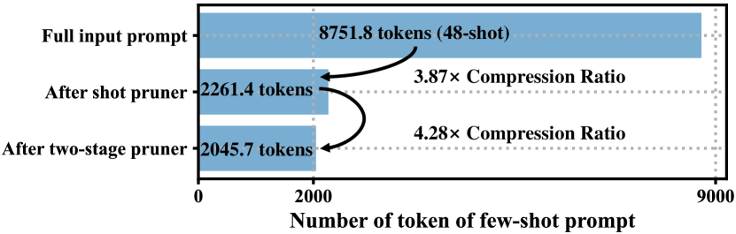
Token pruning ratios. We now investigate token pruning ratios by our pruner. Fig. 5 shows the remaining token length for LLaMA2-70B after our pruner. In total, we achieve a 4.28 pruning ratio, with shot pruner contributing a 3.87 ratio. The results suggest that our pruner favors pruning more coarse-grained shots over fine-grained tokens.
Inference cost. CoT-Influx is a lightweight plug-and-play module, including a 336MB BERT-Large model and a tiny 4MB coarse-to-fine pruner. We measure its additional inference cost. Table 8 shows the total inference latency and GPU memory required to run LLaMA2-7B with different methods on GSM8K, measured on a single NVIDIA A100 GPU. The results reveal that CoT-Influx introduces a negligible 1.4GB additional memory and a 1.7% increase in latency. This is more effective than prompt compression baselines, such as Selective Context and LLMLingua, which require significantly higher latency and more GPU memory, potentially hindering efficient deployment.
Implications. Our analysis of retained CoT examples and tokens yields the following insights: (1) More capable LLMs favor harder CoT examples, while smaller LLMs opt for simpler ones. (2) Numerical and format tokens are essential for math reasoning. Function words like with, the, then, and irrelevant background context such as theater can be pruned without affecting reasoning capability.
6 Conclusion
We present CoT-Influx, a plug-and-play module that improves LLM math reasoning by pruning unnecessary few-shot examples at shot and token levels for a more effective input context. To train the module, we use reinforcement learning to optimize a math reasoning-specific reward with GPT-4 evolved CoT dataset MRD3. Extensive experiments on various datasets and LLMs compared with state-of-the-art baselines demonstrate the effectiveness of our method. This paper highlights the vast potential of few-shot CoT prompting in augmenting LLMs’ math reasoning abilities.
Limitations
As in-context learning with LLM heavily relies on the selected examples in the prompt, the performance of CoT-Influx can be influenced by the quality of CoT generation. Despite this, CoT-Influx still demonstrates strong performance on our GPT4-evolved dataset MRD3. We currently use BERT to obtain the feature embedding of a CoT example, which cannot handle long-sequence examples exceeding 512 tokens. We will take these limitations into account and mitigate them in future work.
References
- Brown et al. (2020) Tom Brown, Benjamin Mann, Nick Ryder, Melanie Subbiah, Jared D Kaplan, Prafulla Dhariwal, Arvind Neelakantan, Pranav Shyam, Girish Sastry, Amanda Askell, Sandhini Agarwal, Ariel Herbert-Voss, Gretchen Krueger, Tom Henighan, Rewon Child, Aditya Ramesh, Daniel Ziegler, Jeffrey Wu, Clemens Winter, Chris Hesse, Mark Chen, Eric Sigler, Mateusz Litwin, Scott Gray, Benjamin Chess, Jack Clark, Christopher Berner, Sam McCandlish, Alec Radford, Ilya Sutskever, and Dario Amodei. 2020. Language models are few-shot learners. In Advances in Neural Information Processing Systems, volume 33.
- Chen et al. (2023a) Shouyuan Chen, Sherman Wong, Liangjian Chen, and Yuandong Tian. 2023a. Extending context window of large language models via positional interpolation. arXiv preprint arXiv:2306.15595.
- Chen et al. (2023b) Wenhu Chen, Xueguang Ma, Xinyi Wang, and William W. Cohen. 2023b. Program of thoughts prompting: Disentangling computation from reasoning for numerical reasoning tasks. Transactions on Machine Learning Research.
- Chevalier et al. (2023) Alexis Chevalier, Alexander Wettig, Anirudh Ajith, and Danqi Chen. 2023. Adapting language models to compress contexts. arXiv preprint arXiv:2305.14788.
- Chowdhery et al. (2022) Aakanksha Chowdhery, Sharan Narang, Jacob Devlin, Maarten Bosma, Gaurav Mishra, Adam Roberts, Paul Barham, Hyung Won Chung, Charles Sutton, Sebastian Gehrmann, et al. 2022. Palm: Scaling language modeling with pathways. arXiv preprint arXiv:2204.02311.
- Cobbe et al. (2021) Karl Cobbe, Vineet Kosaraju, Mohammad Bavarian, Mark Chen, Heewoo Jun, Lukasz Kaiser, Matthias Plappert, Jerry Tworek, Jacob Hilton, Reiichiro Nakano, et al. 2021. Training verifiers to solve math word problems. arXiv preprint arXiv:2110.14168.
- Dai et al. (2023) Damai Dai, Yutao Sun, Li Dong, Yaru Hao, Shuming Ma, Zhifang Sui, and Furu Wei. 2023. Why can gpt learn in-context? language models secretly perform gradient descent as meta-optimizers. In Findings of the Association for Computational Linguistics: ACL 2023, pages 4005–4019.
- Deng et al. (2022) Mingkai Deng, Jianyu Wang, Cheng-Ping Hsieh, Yihan Wang, Han Guo, Tianmin Shu, Meng Song, Eric P Xing, and Zhiting Hu. 2022. Rlprompt: Optimizing discrete text prompts with reinforcement learning. arXiv preprint arXiv:2205.12548.
- Devlin et al. (2018) Jacob Devlin, Ming-Wei Chang, Kenton Lee, and Kristina Toutanova. 2018. Bert: Pre-training of deep bidirectional transformers for language understanding. arXiv preprint arXiv:1810.04805.
- Ding et al. (2023) Ruomeng Ding, Chaoyun Zhang, Lu Wang, Yong Xu, Minghua Ma, Wei Zhang, Si Qin, Saravan Rajmohan, Qingwei Lin, and Dongmei Zhang. 2023. Everything of thoughts: Defying the law of penrose triangle for thought generation. arXiv preprint arXiv:2311.04254.
- Fu et al. (2023) Yao Fu, Litu Ou, Mingyu Chen, Yuhao Wan, Hao Peng, and Tushar Khot. 2023. Chain-of-thought hub: A continuous effort to measure large language models’ reasoning performance. arXiv preprint arXiv:2305.17306.
- Gao et al. (2021) Tianyu Gao, Adam Fisch, and Danqi Chen. 2021. Making pre-trained language models better few-shot learners. In Joint Conference of the 59th Annual Meeting of the Association for Computational Linguistics and the 11th International Joint Conference on Natural Language Processing, ACL-IJCNLP 2021, pages 3816–3830. Association for Computational Linguistics (ACL).
- Ge et al. (2023) Tao Ge, Jing Hu, Xun Wang, Si-Qing Chen, and Furu Wei. 2023. In-context autoencoder for context compression in a large language model. arXiv preprint arXiv:2307.06945.
- Han et al. (2023) Chi Han, Qifan Wang, Wenhan Xiong, Yu Chen, Heng Ji, and Sinong Wang. 2023. Lm-infinite: Simple on-the-fly length generalization for large language models. arXiv preprint arXiv:2308.16137.
- Hao et al. (2022) Yaru Hao, Yutao Sun, Li Dong, Zhixiong Han, Yuxian Gu, and Furu Wei. 2022. Structured prompting: Scaling in-context learning to 1,000 examples. arXiv preprint arXiv:2212.06713.
- Hoffmann et al. (2022) Jordan Hoffmann, Sebastian Borgeaud, Arthur Mensch, Elena Buchatskaya, Trevor Cai, Eliza Rutherford, Diego de Las Casas, Lisa Anne Hendricks, Johannes Welbl, Aidan Clark, et al. 2022. Training compute-optimal large language models. arXiv preprint arXiv:2203.15556.
- Hongjin et al. (2022) SU Hongjin, Jungo Kasai, Chen Henry Wu, Weijia Shi, Tianlu Wang, Jiayi Xin, Rui Zhang, Mari Ostendorf, Luke Zettlemoyer, Noah A Smith, et al. 2022. Selective annotation makes language models better few-shot learners. In The Eleventh International Conference on Learning Representations.
- Hosseini et al. (2014) Mohammad Javad Hosseini, Hannaneh Hajishirzi, Oren Etzioni, and Nate Kushman. 2014. Learning to solve arithmetic word problems with verb categorization. In Proceedings of the 2014 Conference on Empirical Methods in Natural Language Processing (EMNLP), pages 523–533.
- Jiang et al. (2023) Huiqiang Jiang, Qianhui Wu, Chin-Yew Lin, Yuqing Yang, and Lili Qiu. 2023. Llmlingua: Compressing prompts for accelerated inference of large language models. In Proceedings of the 2023 Conference on Empirical Methods in Natural Language Processing.
- Kim et al. (2022) Sehoon Kim, Sheng Shen, David Thorsley, Amir Gholami, Woosuk Kwon, Joseph Hassoun, and Kurt Keutzer. 2022. Learned token pruning for transformers. In Proceedings of the 28th ACM SIGKDD Conference on Knowledge Discovery and Data Mining, KDD ’22, page 784–794. Association for Computing Machinery.
- Kojima et al. (2022) Takeshi Kojima, Shixiang Shane Gu, Machel Reid, Yutaka Matsuo, and Yusuke Iwasawa. 2022. Large language models are zero-shot reasoners. Advances in neural information processing systems, 35:22199–22213.
- Koncel-Kedziorski et al. (2015) Rik Koncel-Kedziorski, Hannaneh Hajishirzi, Ashish Sabharwal, Oren Etzioni, and Siena Dumas Ang. 2015. Parsing algebraic word problems into equations. Transactions of the Association for Computational Linguistics, 3:585–597.
- Koncel-Kedziorski et al. (2016) Rik Koncel-Kedziorski, Subhro Roy, Aida Amini, Nate Kushman, and Hannaneh Hajishirzi. 2016. MAWPS: A math word problem repository. In Proceedings of the 2016 Conference of the North American Chapter of the Association for Computational Linguistics: Human Language Technologies, pages 1152–1157.
- Lewkowycz et al. (2022) Aitor Lewkowycz, Anders Andreassen, David Dohan, Ethan Dyer, Henryk Michalewski, Vinay Ramasesh, Ambrose Slone, Cem Anil, Imanol Schlag, Theo Gutman-Solo, et al. 2022. Solving quantitative reasoning problems with language models. Advances in Neural Information Processing Systems, 35:3843–3857.
- Li et al. (2023a) Junyan Li, Li Lyna Zhang, Jiahang Xu, Yujing Wang, Shaoguang Yan, Yunqing Xia, Yuqing Yang, Ting Cao, Hao Sun, Weiwei Deng, Qi Zhang, and Mao Yang. 2023a. Constraint-aware and ranking-distilled token pruning for efficient transformer inference. In Proceedings of the 29th ACM SIGKDD Conference on Knowledge Discovery and Data Mining, KDD ’23, page 1280–1290.
- Li et al. (2023b) Yucheng Li, Bo Dong, Chenghua Lin, and Frank Guerin. 2023b. Compressing context to enhance inference efficiency of large language models.
- Ling et al. (2017) Wang Ling, Dani Yogatama, Chris Dyer, and Phil Blunsom. 2017. Program induction by rationale generation: Learning to solve and explain algebraic word problems. In Proceedings of the 55th Annual Meeting of the Association for Computational Linguistics (Volume 1: Long Papers), pages 158–167.
- Liu et al. (2021) Jiachang Liu, Dinghan Shen, Yizhe Zhang, Bill Dolan, Lawrence Carin, and Weizhu Chen. 2021. What makes good in-context examples for gpt-? arXiv preprint arXiv:2101.06804.
- Lu et al. (2022) Yao Lu, Max Bartolo, Alastair Moore, Sebastian Riedel, and Pontus Stenetorp. 2022. Fantastically ordered prompts and where to find them: Overcoming few-shot prompt order sensitivity. In Proceedings of the 60th Annual Meeting of the Association for Computational Linguistics (Volume 1: Long Papers), pages 8086–8098.
- Luo et al. (2023) Haipeng Luo, Qingfeng Sun, Can Xu, Pu Zhao, Jianguang Lou, Chongyang Tao, Xiubo Geng, Qingwei Lin, Shifeng Chen, and Dongmei Zhang. 2023. Wizardmath: Empowering mathematical reasoning for large language models via reinforced evol-instruct. arXiv preprint arXiv:2308.09583.
- Min et al. (2022) Sewon Min, Xinxi Lyu, Ari Holtzman, Mikel Artetxe, Mike Lewis, Hannaneh Hajishirzi, and Luke Zettlemoyer. 2022. Rethinking the role of demonstrations: What makes in-context learning work? In Proceedings of the 2022 Conference on Empirical Methods in Natural Language Processing, pages 11048–11064.
- Mu et al. (2023) Jesse Mu, Xiang Lisa Li, and Noah Goodman. 2023. Learning to compress prompts with gist tokens. arXiv preprint arXiv:2304.08467.
- OpenAI (2023a) OpenAI. 2023a. Gpt-4 technical report.
- OpenAI (2023b) OpenAI. 2023b. Welcome to the openai platform.
- Patel et al. (2021) Arkil Patel, Satwik Bhattamishra, and Navin Goyal. 2021. Are nlp models really able to solve simple math word problems? In Proceedings of the 2021 Conference of the North American Chapter of the Association for Computational Linguistics: Human Language Technologies, pages 2080–2094.
- Peng et al. (2023a) Bowen Peng, Jeffrey Quesnelle, Honglu Fan, and Enrico Shippole. 2023a. Yarn: Efficient context window extension of large language models. arXiv preprint arXiv:2309.00071.
- Peng et al. (2023b) Bowen Peng, Jeffrey Quesnelle, Honglu Fan, and Enrico Shippole. 2023b. Yarn: Efficient context window extension of large language models. arXiv preprint arXiv:2309.00071.
- Qin et al. (2023) Chengwei Qin, Aston Zhang, Anirudh Dagar, and Wenming Ye. 2023. In-context learning with iterative demonstration selection. arXiv preprint arXiv:2310.09881.
- Robertson et al. (2009) Stephen Robertson, Hugo Zaragoza, et al. 2009. The probabilistic relevance framework: Bm25 and beyond. Foundations and Trends® in Information Retrieval, 3(4):333–389.
- Roy and Roth (2015) Subhro Roy and Dan Roth. 2015. Solving general arithmetic word problems. In Proceedings of the 2015 Conference on Empirical Methods in Natural Language Processing, pages 1743–1752.
- Rubin et al. (2021) Ohad Rubin, Jonathan Herzig, and Jonathan Berant. 2021. Learning to retrieve prompts for in-context learning. arXiv preprint arXiv:2112.08633.
- Scarlatos and Lan (2023) Alexander Scarlatos and Andrew Lan. 2023. Reticl: Sequential retrieval of in-context examples with reinforcement learning. arXiv preprint arXiv:2305.14502.
- Shin et al. (2020) Taylor Shin, Yasaman Razeghi, Robert L Logan IV, Eric Wallace, and Sameer Singh. 2020. Autoprompt: Eliciting knowledge from language models with automatically generated prompts. In Proceedings of the 2020 Conference on Empirical Methods in Natural Language Processing (EMNLP), pages 4222–4235.
- Touvron et al. (2023a) Hugo Touvron, Thibaut Lavril, Gautier Izacard, Xavier Martinet, Marie-Anne Lachaux, Timothée Lacroix, Baptiste Rozière, Naman Goyal, Eric Hambro, Faisal Azhar, et al. 2023a. Llama: Open and efficient foundation language models. arXiv preprint arXiv:2302.13971.
- Touvron et al. (2023b) Hugo Touvron, Louis Martin, Kevin Stone, Peter Albert, Amjad Almahairi, Yasmine Babaei, Nikolay Bashlykov, Soumya Batra, Prajjwal Bhargava, Shruti Bhosale, et al. 2023b. Llama 2: Open foundation and fine-tuned chat models. arXiv preprint arXiv:2307.09288.
- Tworkowski et al. (2023) Szymon Tworkowski, Konrad Staniszewski, Mikołaj Pacek, Yuhuai Wu, Henryk Michalewski, and Piotr Miłoś. 2023. Focused transformer: Contrastive training for context scaling.
- Von Oswald et al. (2023) Johannes Von Oswald, Eyvind Niklasson, Ettore Randazzo, João Sacramento, Alexander Mordvintsev, Andrey Zhmoginov, and Max Vladymyrov. 2023. Transformers learn in-context by gradient descent. In International Conference on Machine Learning, pages 35151–35174. PMLR.
- Wang et al. (2023a) Lean Wang, Lei Li, Damai Dai, Deli Chen, Hao Zhou, Fandong Meng, Jie Zhou, and Xu Sun. 2023a. Label words are anchors: An information flow perspective for understanding in-context learning. arXiv preprint arXiv:2305.14160.
- Wang et al. (2023b) Liang Wang, Nan Yang, and Furu Wei. 2023b. Learning to retrieve in-context examples for large language models. arXiv preprint arXiv:2307.07164.
- Wang et al. (2023c) Weizhi Wang, Li Dong, Hao Cheng, Xiaodong Liu, Xifeng Yan, Jianfeng Gao, and Furu Wei. 2023c. Augmenting language models with long-term memory. arXiv preprint arXiv:2306.07174.
- Wang et al. (2023d) Xuezhi Wang, Jason Wei, Dale Schuurmans, Quoc V Le, Ed H. Chi, Sharan Narang, Aakanksha Chowdhery, and Denny Zhou. 2023d. Self-consistency improves chain of thought reasoning in language models. In The Eleventh International Conference on Learning Representations.
- Wei et al. (2022) Jason Wei, Xuezhi Wang, Dale Schuurmans, Maarten Bosma, Fei Xia, Ed Chi, Quoc V Le, Denny Zhou, et al. 2022. Chain-of-thought prompting elicits reasoning in large language models. Advances in Neural Information Processing Systems, 35:24824–24837.
- Weng et al. (2023) Yixuan Weng, Minjun Zhu, Fei Xia, Bin Li, Shizhu He, Shengping Liu, Bin Sun, Kang Liu, and Jun Zhao. 2023. Large language models are better reasoners with self-verification.
- Williams (1992) Ronald J. Williams. 1992. Simple statistical gradient-following algorithms for connectionist reinforcement learning.
- Wingate et al. (2022) David Wingate, Mohammad Shoeybi, and Taylor Sorensen. 2022. Prompt compression and contrastive conditioning for controllability and toxicity reduction in language models. arXiv preprint arXiv:2210.03162.
- Xiao et al. (2023) Guangxuan Xiao, Yuandong Tian, Beidi Chen, Song Han, and Mike Lewis. 2023. Efficient streaming language models with attention sinks. arXiv.
- Xu et al. (2023) Can Xu, Qingfeng Sun, Kai Zheng, Xiubo Geng, Pu Zhao, Jiazhan Feng, Chongyang Tao, and Daxin Jiang. 2023. Wizardlm: Empowering large language models to follow complex instructions. arXiv preprint arXiv:2304.12244.
- Yao et al. (2023) Shunyu Yao, Dian Yu, Jeffrey Zhao, Izhak Shafran, Thomas L Griffiths, Yuan Cao, and Karthik Narasimhan. 2023. Tree of thoughts: Deliberate problem solving with large language models. arXiv preprint arXiv:2305.10601.
- Yoo et al. (2022) Kang Min Yoo, Junyeob Kim, Hyuhng Joon Kim, Hyunsoo Cho, Hwiyeol Jo, Sang-Woo Lee, Sang-goo Lee, and Taeuk Kim. 2022. Ground-truth labels matter: A deeper look into input-label demonstrations. In Proceedings of the 2022 Conference on Empirical Methods in Natural Language Processing, pages 2422–2437.
- Zhenyu et al. (2023) Wu Zhenyu, Wang Yaoxiang, Ye Jiacheng, Feng Jiangtao, Xu Jingjing, Qiao Yu, and Wu Zhiyong. 2023. Openicl: An open-source framework for in-context learning. arXiv preprint arXiv:2303.02913.
Appendix
This appendix includes additional analysis, the evolution of MRD3, pruner training details, additional related works, and prompt settings. These contents are organized in separate sections as follows:
-
•
Sec. A provides additional analysis and case studies, including the comparison of CoT-Influx with context window extension methods, performance of CoT-Influx on finetuned LLMs (LLaMA2-13B-Chat and GPT-3.5-Turbo), ablation study on the reward design, and sensitivity analysis on hyperparameters of the pruner. Additional case studies on the GSM8K with different prompting methods are given to extensively prove the effectiveness of our method.
-
•
Sec. B introduces the prompt we used for the evolution of the examples in our MRD3. Both the original input and the evolution results are given as examples. We also analyze the difficulty and reasoning step distribution of different evolution methods and derive a new observation regarding difficulty preference for different LLMs.
- •
-
•
Sec. D elaborates previous LLM context window extension and LLM in-context learning methods, and analyzes the advantage of our proposed CoT-Influx compared with various previous methods.
-
•
Sec. E demonstrates the prompt we used in this work for difficulty and reasoning step evaluation, and GPT-4 based compression on input few-shot prompts.
Appendix A Additional Analysis and Case Study
A.1 Comparison with context window extension methods
While our work tackle the challenge of limited context window by pruning the redundant input few-shot prompts, another solution is to extend the context window of LLMs. We compare the math reasoning performance of LLaMA2-7B with CoT-Influx and LLaMA2-7B with 32K token context window extended with Positional Interpolation (PI) Chen et al. (2023a). The results are listed in Table 9.
| Number of input shots | 12 | 16 | 20 | 24 | 28 | 32 | 40 |
| Average number of tokens | 2108.6 | 2820.6 | 3535.4 | 4217.2 | 4929.1 | 5641.2 | 7070.8 |
| LLaMA2-7B | 13.87 | 15.08 | 14.02 | - | - | - | - |
| LLaMA2-7B+CoT-Influx | - | - | - | 14.33 | 15.09 | 15.92 | 15.77 |
| LLaMA2-7B-32K | 11.37 | 12.81 | 11.37 | 11.83 | 11.83 | 11.52 | 11.30 |
When the input prompt does not exceed the window token limit (the number of input shots is not more than 20), we compare the performance of LLaMA2-7B-32K with LLaMA2-7B. When the input prompt exceed the context window length, we apply our CoT-Influx to prune the prompts to make sure that they can be directly input to LLaMA2-7B without PI. The results show that the context window extension weaken the reasoning ability with the same input prompt. The limit of context window can be unlocked with our CoT-Influx. Moreover, our observation that LLMs can improve reasoning with more helpful CoT examples does not hold true for LLMs with extended context window.
A.2 CoT-Influx on finetuned LLMs
In Sec. 5.1, we verify the effectiveness of CoT-Influx on LLaMA2-7B, 13B, and 70B. LLaMA2-chat Touvron et al. (2023b) and GPT-3.5-Turbo OpenAI (2023b) are also the widely adopted LLMs that are acquired after supervised instruction finetuning (SIFT) and Reinforcement Learning from Human Feedback (RLHF), respectively. The different finetuning strategy and the various finetuning data result in unique properties of the LLMs. For example, LLaMA2-Chat-13B perform significantly better than LLaMA2-13B on math reasoning tasks with zero-shot-cot prompts. To show that our CoT-Influx can also help improve the reasoning ability of these finetuned LLMs, we conduct experiments of LLaMA2-13B-Chat and GPT-3.5-Turbo (gpt35-turbo-0613) on GSM8K dataset. As shown from the results listed in Table 10, our CoT-Influx also surpass a wide range of prompting baselines with more input shots and fewer tokens. Specifically on LLaMA2-13B-Chat, CoT-Influx achieve an absolute improvement 9.78% compared to TopK retrieval baseline with only 57.6% average tokens.
A.3 Ablation study on reward design
The reward of our CoT-Influx pruner are made up of three parts: math reasoning accuracy reward , LLM loss reward , and context window token limit reward . Each part of the full reward function are important for the effective learning of the pruner. We perform ablation study on these components and the results are listed in Table 11. As can be seen from the results, whenever a reward component are removed, the CoT-Influx pruner give sub-optimal prompt selection and compression results, which cause a decrease compared to the full reward baseline. Among these three reward function parts, the token limit reward is the most important because training without this term will cause the pruner not to prune any shot or token and directly output the truncated prompt of the redundant input.
| Reward Function | LLaMA-2-7B | LLaMA-2-13B |
| Full Reward | 15.92 | 32.37 |
| w/o | 15.24 | 31.46 |
| w/o | 14.78 | 31.16 |
| w/o | 14.25 | 29.72 |
A.4 Sensitivity analysis on hyperparameters
We perform sensitivity analysis on the hyperparameters to investigate the robustness of our CoT-Influx pruner training. The most important setting in the training of our CoT-Influx pruner is the token target and token penalty co-efficient . Table 12 presents the results of CoT-Influx using different sets of hyperparameters and . The results demostrate that the training of our CoT-Influx pruner are highly robust as long as the token target is not overly aggressive (token target should not be too small).
| Token target | LLaMA-2-13B |
| 2048 | 32.37 |
| 1024 | 29.57 |
| 3072 | 32.37 |
| Token penalty co-efficient | LLaMA-2-13B |
| (-1,1) | 32.37 |
| (-0.5,1) | 31.69 |
| (-1,0.5) | 32.22 |
A.5 Case Study on different prompt compression methods
To show how different prompt compression methods prune input few-shot prompts in different manners, we given an example of a 8-shot prompt selected using TopK retriever. The original full few-shot prompts are listed in the following box:
Most of the examples above have similar background and target (tickets, movie, expense, etc.) but the difficulty and number of reasoning steps are various. In addition, the solution of most questions are highly redundant. When performing math reasoning with, it is important to select the most suitable and concise examples considering the characteristic of the current input question. In our evaluation across different methods shown in Sec. 5.1, we have empirically observe the previous methods fail to retain the structural integrity of prompt. We show the pruned prompt with different methods and similar token length in the following box. We can see that Selective Context and LLMLingua frequently discard the important part including ‘Q:’, ‘A:’, ‘n’, “Let’s think step by step”, and “The answer is” in these examples. Although GPT-4 can retain majority of these tokens, the reasoning steps are systematically removed because GPT-4 cannot be instructed to utilize the redundancy in both example-level and token-level. Our proposed CoT-Influx, however, select the most representative examples and only remove the redundant function words.
Appendix B Evolution of MRD3
B.1 Prompt template for evolution
The prompt we used for evolution of the examples in our dataset are listed as follow:
Most part of the prompt of different evolution strategies are similar. Based on our quantitatively analysis on the difficulty and reasoning step distribution, GPT-4 can effectively follow our instruction to modify the constraints or difficulty level of input questions.
B.2 Difficulty and Reasoning Steps Distribution of MRD3
Based on the GPT-4-based estimation, we are able to quantitatively look into the distribution of difficulty and reasoning step distribution in MRD3 without evolution and MRD3 with various evolution schemes. The results are shown in Figure 6. The original distribution of both difficulty level and reasoning steps of questions centralized between 2 to 4. More questions with higher difficulty using add_constraints, deepening, and increase_reasoning. As we discuss in the reward design of our RL pruner, easy questions are important for the stabilization of RL and can help effectively identify the quality of pruned prompt, more easier questions are generated with revise_difficulty and produce_easier evolution scheme.
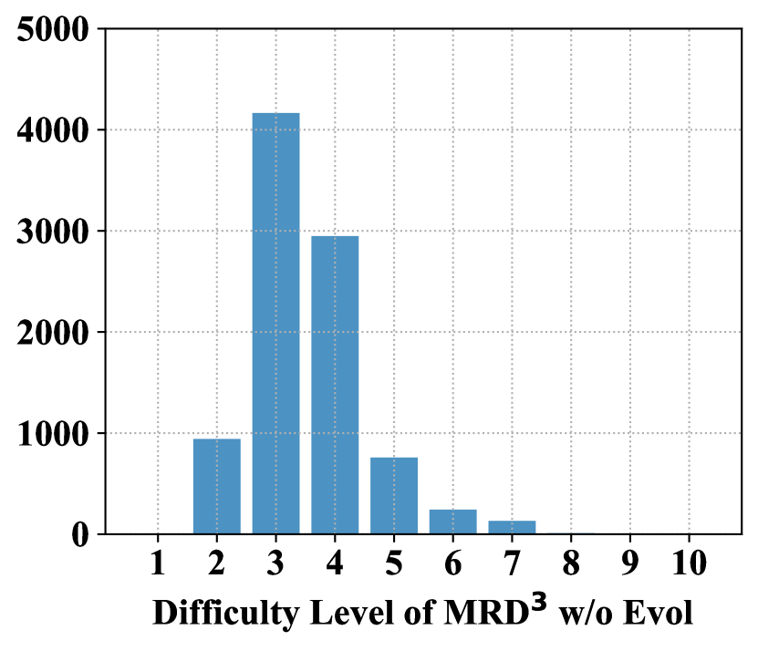
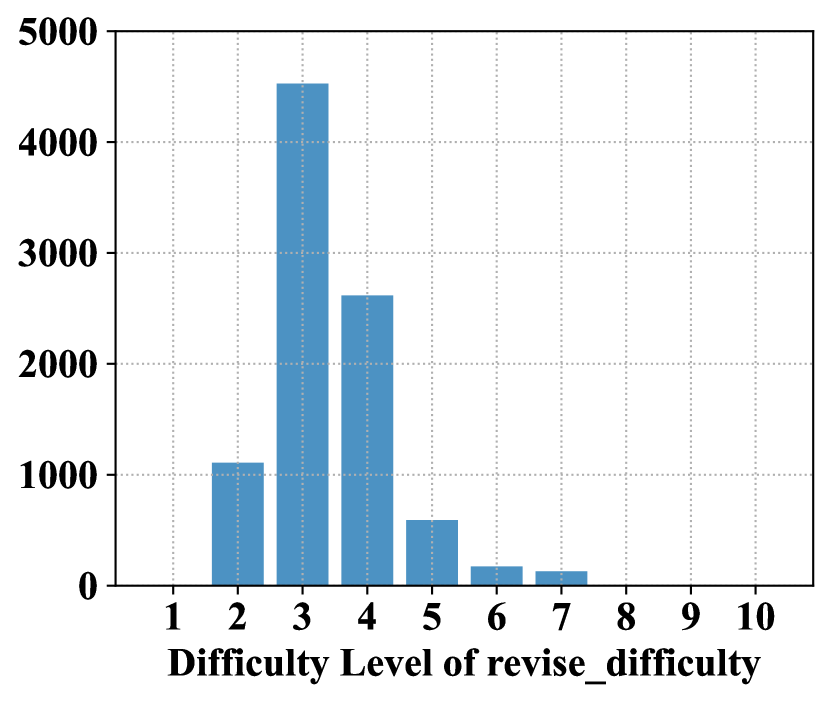
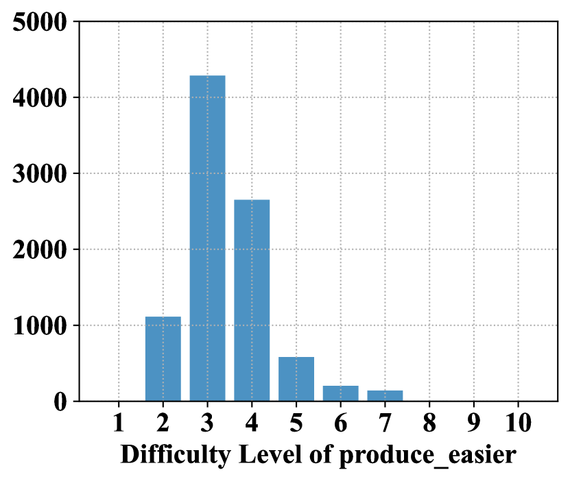
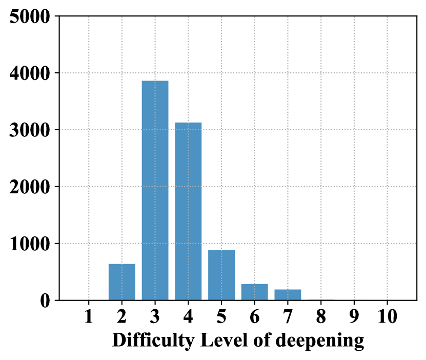
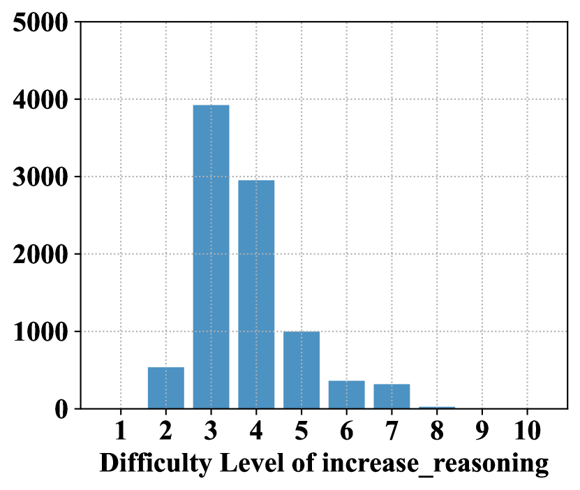
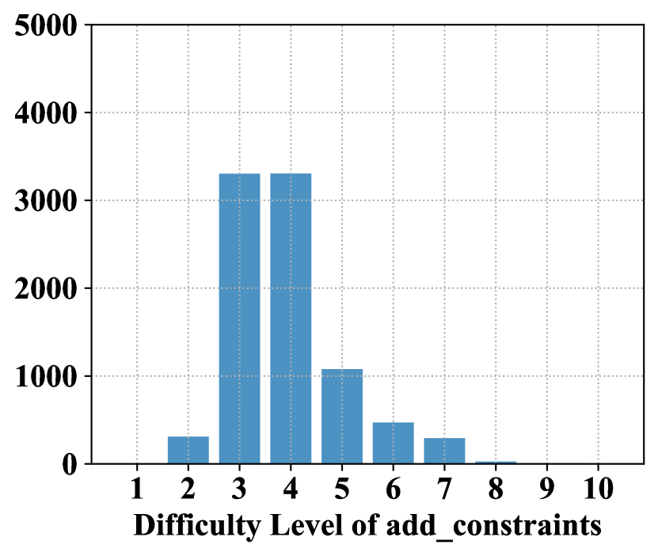
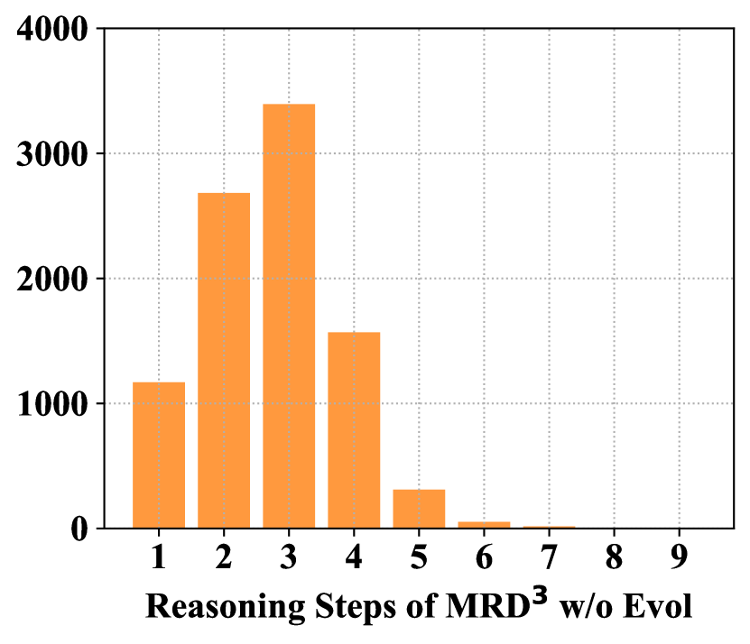
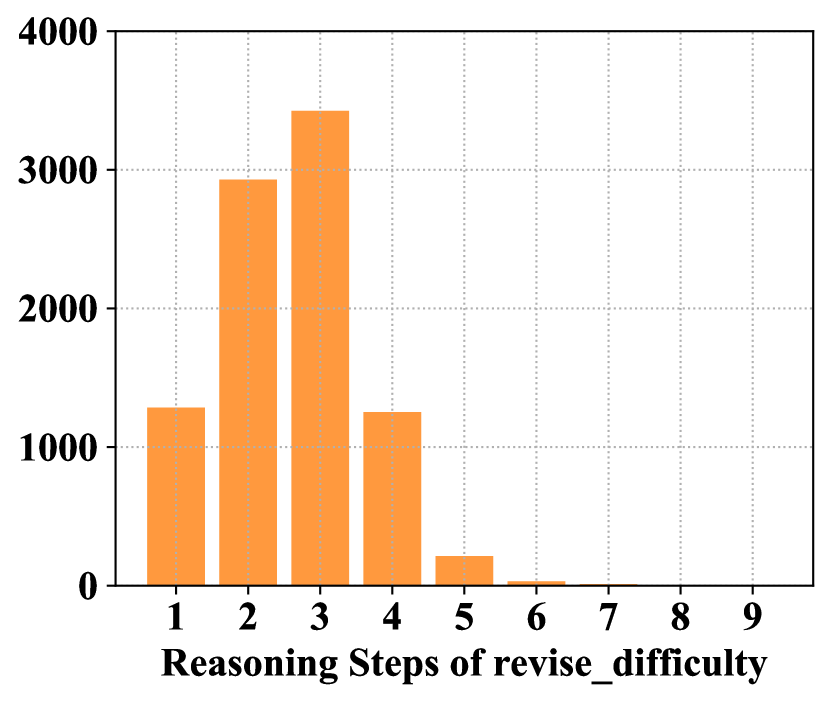
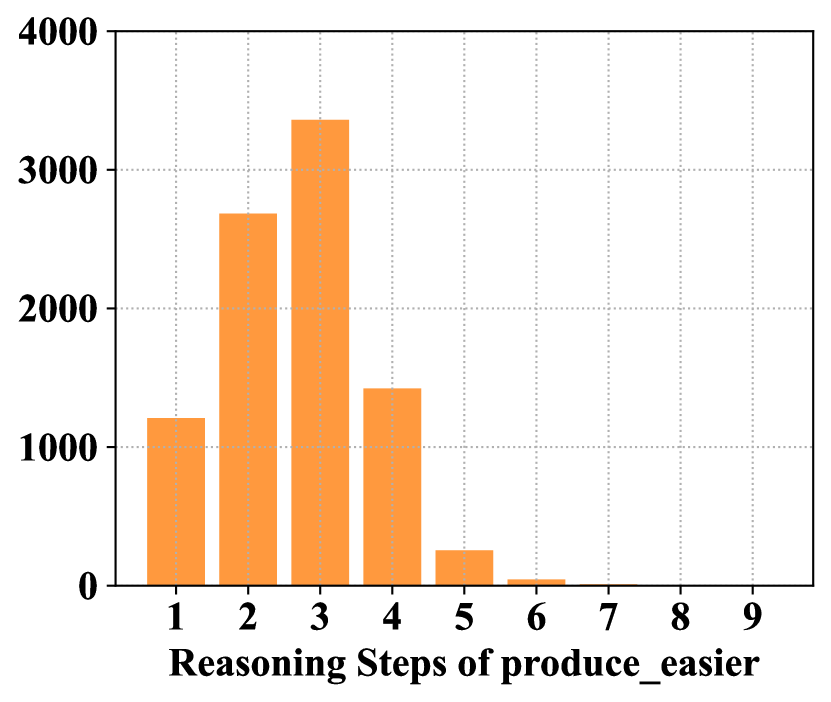
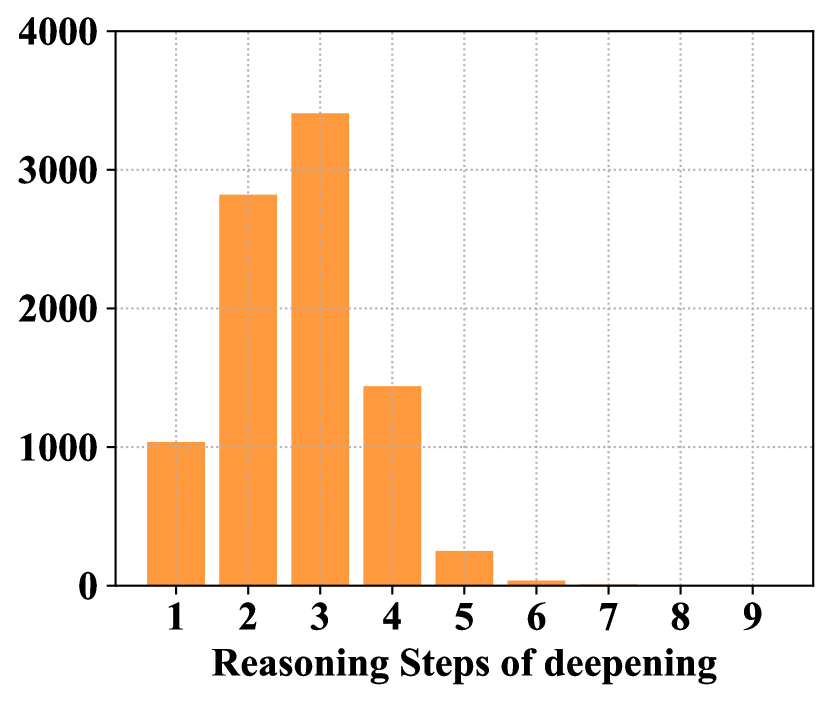
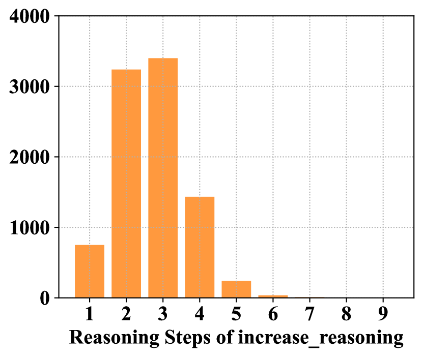
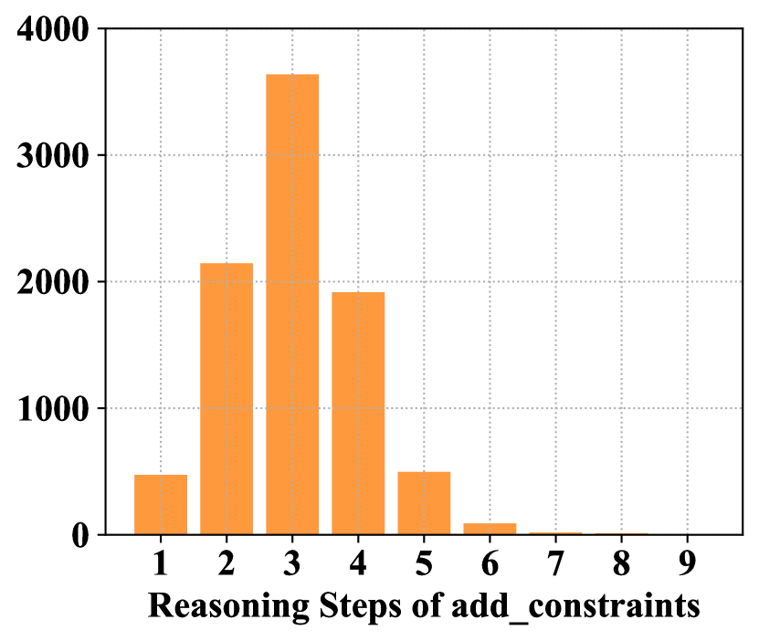
B.3 Additional observation on difficulty distribution
As shown in Figure 6, the difficulty diversity of examples in MRD3 are improved after prompt evolution. We then research into the difficulty distribution of the input examples for in-context learning. The observation is shown as follow in addition to the 3 main observations proposed in Sec. 3:
Observation 4: LLMs with different capabilities prefer CoT examples of varying difficulties.
In our further exploration of the optimal selection of CoT examples for improve mathematical reasoning, we observe that LLMs of different capabilities exhibit preferences for CoT examples of varying difficulty levels. As Table 13 shows, we categorize each CoT example in the MRD3-Evol dataset by difficulty level. We then select the top 16 CoT examples from different groups as few-shot examples for LLaMA2 models. Results show LLaMA2-7b prefers CoT examples with a difficulty level of 3-4, while LLaMA2-13b, more capable, prefers those with a difficulty level of 4 or above. This aligns with intuition: for instance, when assisting a middle school student with math problems, it is more beneficial to provide examples of moderate difficulty that they can comprehend, whereas for a high school student, examples with a higher level of difficulty are more useful.
| Model | Difficulty ( 3) | Difficulty (3-4) | Difficulty ( 4) |
| LLaMA2-7B | 14.49 | 15.39 | 14.86 |
| LLaMA2-13B | 23.81 | 25.32 | 25.47 |
In our evaluation of CoT-Influx with various LLMs, we found that the shot selection results are consistent with our observation. The average difficulty score and number of reasoning steps for the examples selected by LLaMA2-70B pruner are 3.57 and 3.04, which are higher than the results of LLaMA2-13B are 3.51 and 2.98. The empirical results further support our assumption that LLMs with larger size prefers harder examples than smaller-scale LLMs.
B.4 Evolution example
We give an example of a math questions and then show the evolved results of the questions and answers. The evolved results follow our instruction given in Sec. B.1. As can be seen from the evolution results, the answer of input questions can be modified (e.g. ground truth answer change from 16 to 12 in add_constraints). The whole background of the questions can also be replaced (e.g. computation target of question change from current tickets at the arcade to final points of a game in produce_easier). These modification and variation improve the diversity of our prompt candidate sets, which are the building block for the training and reasoning with CoT-Influx.
Appendix C Pruner Training and Evaluation Details
C.1 Detailed algorithm for training data preparation
As a supplement to phase 1 in Algorithm 1, we show the algorithm for training data preparation in Algorithm 2. Both the difficulty level and number of reasoning step are involved in the GPT-4-based evaluation. However, we omit the reasoning step in this algorithm as we only use difficulty level in the training set split.
Input: CoT dataset , difficulty threshold ,
Output: MRD3 , questions set , prompt set
C.2 Detailed settings and hyperparameters
The detailed hyper-parameters setting of different LLMs’ pruner are listed in Table 14. Majority of these hyperparameters are shared across different LLMs. The evolution subset as the prompt candidates for evaluation are determined by searching the performance of math reasoning on 100 random examples.
| Model | LLaMA2-7B | LLaMA2-13B | LLaMA2-70B |
| Epoch | 3 | 3 | 3 |
| Batch Size | 1 | 1 | 1 |
| Pruner LLM Base | LLaMA2-13B | LLaMA2-13B | LLaMA2-70B |
| Input Shot | 40 | 48 | 48 |
| Input Shot (TopK) | 32 | 32 | 32 |
| Input Shot (Few-shot) | 8 | 16 | 16 |
| Optimizer | AdamW | AdamW | AdamW |
| Weight Decay | 1 | 1 | 1 |
| Learning Rate | 1 | 1 | 1 |
| Embedding Extractor | BERT-Large (cased) | BERT-Large (cased) | BERT-Large (cased) |
| Embedding Size | 1024 | 1024 | 1024 |
| Tokenizer Padding | 512 | 512 | 512 |
| Difficulty Threshold | 2 | 2 | 2 |
| Token Target | 2048 | 2048 | 2048 |
| Token Penalty Coefficient | (-1,1) | (-1,1) | (-1,1) |
| Selection Repeat | 10 | 10 | 5 |
| Evol Subset | add_constraints | increase_reasoning | increase_reasoning |
| temperature | 0.8 | 0.8 | 0.8 |
| top_p | 0.95 | 0.95 | 0.95 |
| top_k | 40 | 40 | 40 |
| num_beams | 1 | 1 | 1 |
| max_new_tokens | 1 | 1 | 1 |
C.3 Training dynamics
We visualize the RL training dynamics of the LLaMA2-13B pruner in Figure 7 including the LLM loss reward , prediction reward , moving average of the final pruner reward , and remaining token count . We can see from the results that reward increases steadily with the steps of RL training. The number of remaining tokens decreases rapidly in early steps and then oscillates around the token target. Since our prediction reward are discrete value of , the oscillation phenomenon are more obvious compared with other reward term. This highlight the effectiveness of question repetition and using Exponential Moving Average (EMA) of final reward to suppress this oscillation.
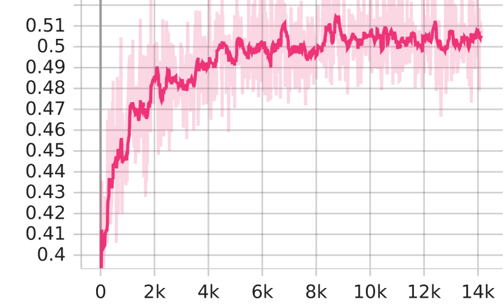
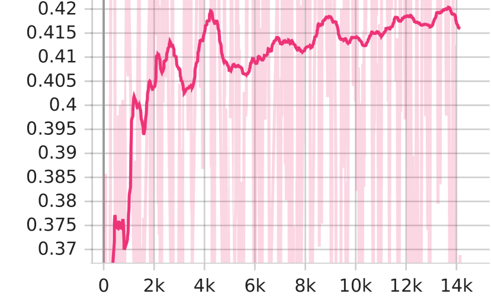
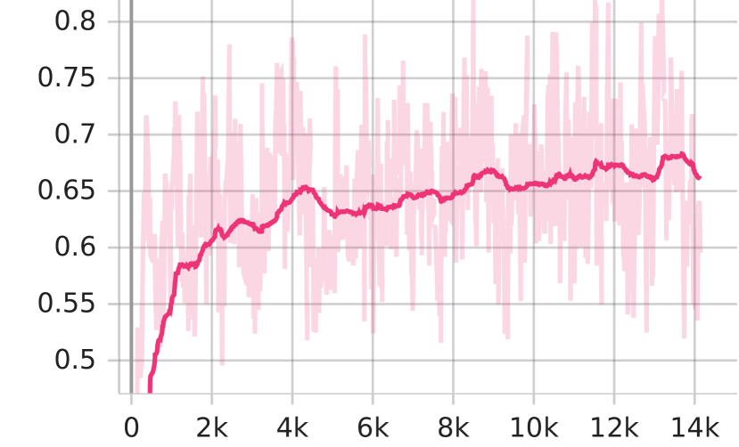
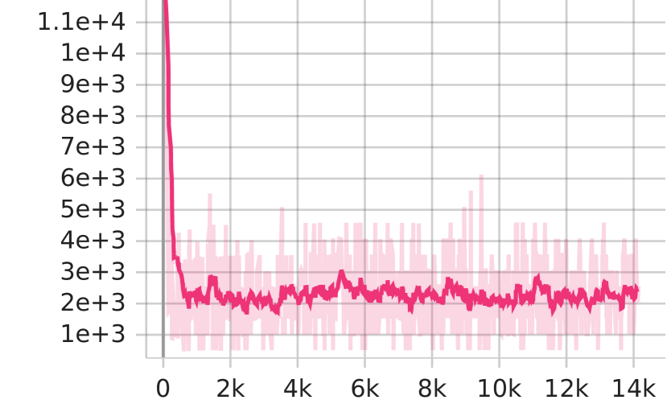
C.4 Detailed introduction of dataset for evaluation
We introduce the details of the datasets we used for evaluation as follows:
-
•
GSM8K Cobbe et al. (2021) is a math reasoning dataset consisting high quality linguistically diverse grade school math word problems created by human problem writers. There are 7473 training examples and 1319 validation examples in the dataset.
-
•
SVAMP Patel et al. (2021) representing Simple Variations on Arithmetic Math word Problems that conduct question sensitivity variation, reasoning ability variation, and structural variation on existing math datasets. There is a total of 1000 examples and all of them are used for evaluation in our settings.
-
•
MultiArith Roy and Roth (2015) is a collection of multi-step arithmetic problems with 600 examples and all of them are used for evaluation in our settings.
-
•
AddSub Hosseini et al. (2014) is a dataset consisting of addition and subtraction problems with 395 examples and all of them are used for evaluation in our settings.
-
•
SingleEq Koncel-Kedziorski et al. (2015) consists grade-school algebra word problems that map to single equations with varying length. Every equation may involve multiple math operations including multiplication, division, subtraction, and addition over non-negative rational numbers and only one variable. There are 508 problems, 1117 sentences, and 15292 words in the dataset.
C.5 Rule-based prompt reconstruction
To make sure the input prompt for inference remain structurally intact, we apply a rule-based prompt reconstruction on the input. For example, “n [question]” will be reconstructed to “nQ: [question]” and “A: Let’s step by step” will be repaired to “A: Let’s think step by step”. While our pruner has been trained to learn the importance of the structure integrity and consistency, there are still few cases when important tokens are pruned, leading to incorrect reasoning results. The rule-based reconstruction can effectively alleviate the influence of sub-optimal pruning strategy. The important tokens that should be reconstructed include ‘Q:’, ‘A:’, ‘n’, “Let’s think step by step”, and “The answer is”.
Appendix D Additional Related Works
LLM In-Context Learning In-context learning (ICL) are one of the emerging abilities of LLMs that conduct various downstream tasks with provided few-shot demonstrations. To fully understand optimize the ICL paradigm, previous research mainly focus on the underlying mechanism of ICL or the proper application of ICL. Pioneering research Von Oswald et al. (2023); Dai et al. (2023) empirically find the similarity between gradient-descent (GD) and ICL, which interprets the trained LLMs are meta-optimizer that can learn the examples in context in forward pass. More recently, Wang et al. (2023a) propose a hypothesis that label words in examples serve as anchors in ICL, and the anchors can help aggregate and distribute the task-relevant information flow. To better utilize ICL, previous research also research on the input format Yoo et al. (2022) and order of examples Min et al. (2022). Our work falls in the second category that shows the compressed examples are an optimal choice for the input of ICL.
LLM Context Window Extension Recently, there has been rising interests in extending the context window of existing pre-trained LLMs. Common approaches include augmenting external memory modules Tworkowski et al. (2023); Wang et al. (2023c), which add extra modules to memorize long past contexts but requires complex training, manipulating attention mechanisms Han et al. (2023); Xiao et al. (2023) or the positional encoding Chen et al. (2023a); Peng et al. (2023b). However, these require LLM modifications. Our method, applicable to black-box LLMs and extendable context windows, is orthogonal to this direction.
Comparison of CoT-Influx with Previous Methods We summarize the advantage of our CoT-Influx compared with previous prompting strategies in Table 15. Gradient-free indicates the methods do not need to backward through LLMs. Unlimited-token represents the original input prompt for these methods are not limited by the context window length of LLMs. Difficulty-aware refers to whether the method take the difficulty of problems into the consideration of their prompt design. Dynamic #Shots means we do not need to setup a target shot number and the pruned input shot numbers are different across various questions. Our CoT-Influx demonstrate significant advantage over all previous methods.
| Methods | Frozen LLMs | Automated | Gradient-free | Unlimited-token | Transferable | Interpretable | Difficulty-aware | Dynamic #Shots |
| Fine-Tuning | ✗ | ✓ | ✗ | ✗ | ✗ | ✗ | ✗ | ✗ |
| Manual Prompt | ✓ | ✗ | ✓ | ✗ | ✓ | ✓ | ✗ | ✗ |
| Soft Prompt Tuning | ✓ | ✓ | ✗ | ✗ | ✗ | ✗ | ✗ | ✗ |
| Prompt Retrieval | ✓ | ✓ | ✓ | ✗ | ✓ | ✓ | ✗ | ✗ |
| AutoPrompt Shin et al. (2020) | ✓ | ✓ | ✗ | ✗ | ✓ | ✓ | ✗ | ✗ |
| RLPrompt Deng et al. (2022) | ✓ | ✓ | ✓ | ✗ | ✓ | ✓ | ✗ | ✗ |
| Context Extension | ✓ | ✓ | ✓ | ✓ | ✓ | ✓ | ✗ | ✗ |
| LLMLingua Jiang et al. (2023) | ✓ | ✓ | ✓ | ✓ | ✓ | ✓ | ✗ | ✗ |
| CoT-Influx(Ours) | ✓ | ✓ | ✓ | ✓ | ✓ | ✓ | ✓ | ✓ |
Appendix E Prompt Settings
In this section, we show the prompt we used in this work for reproducibility. The prompt for evaluating the difficulty and reasoning steps of each examples are:
The prompt for GPT-4 Compression on prompts are shown as follow. Note that we encode the restriction of token limits in both the prompt and API by setting the max_new_token. However, the prompt compression results still fail to follow the restrictions for most cases. This disadvantages of uncontrollable token length is also discussed in previous work Jiang et al. (2023).